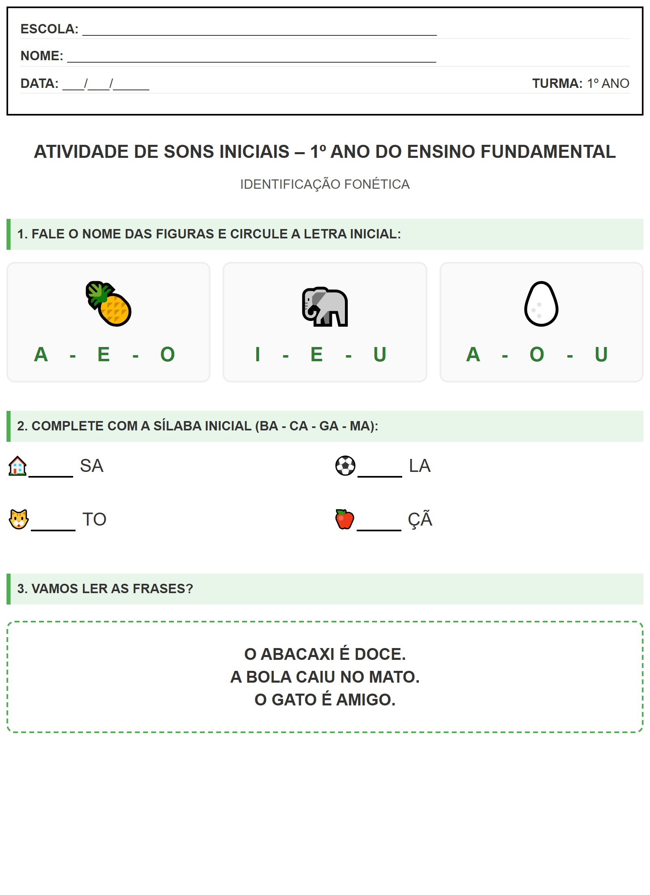

← Voltar ao Portal
ESCOLA:
_________________________________________________
NOME:
___________________________________________________
DATA:
___/___/_____
TURMA:
1º ANO
Atividade de Sons Iniciais – 1º Ano do Ensino Fundamental
IDENTIFICAÇÃO FONÉTICA
1. FALE O NOME DAS FIGURAS E CIRCULE A LETRA INICIAL:
🍍
A - E - O
🐘
I - E - U
🥚
A - O - U
2. COMPLETE COM A SÍLABA INICIAL (BA - CA - GA - MA):
🏠
SA
⚽
LA
🐱
TO
🍎
ÇÃ
3. VAMOS LER AS FRASES?
O ABACAXI É DOCE.
A BOLA CAIU NO MATO.
O GATO É AMIGO.
Visualização da Folha de Atividade
